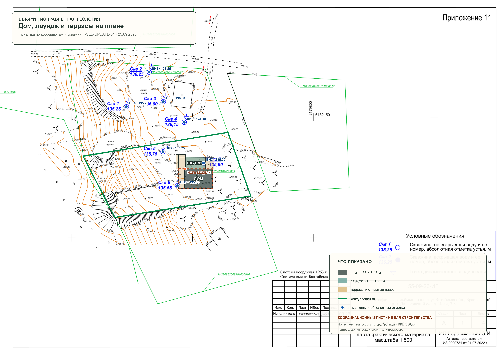

Смотреть крупнее ↗02 / Дом на участке
К озеру —
панорамой.
Предлагаем восточную часть отмеченного участка: она удалена от выраженного западного перепада рельефа. Дом сохраняет ориентацию, а северный вход ведёт через лаундж.
Обновление · 25 сентябряНовая кладовая · корректировка пятна 28.09
Геодезические листы ниже показывают прежний восточный открытый навес. В новом варианте эта часть закрыта кладовой, её восточная грань сдвинута на 600 мм внутрь и совпадает с фасадом дома. Численные отступы кровли/настила и соседство скважин требуется обновить по новому контуру. Смотреть новый план ↗
R2 · лаундж шире на 300 мм к озеру
Западная грань лаунджа теперь совпадает с домом по X = −300 мм. Посадочные листы и численные расстояния ниже относятся к прежнему контуру; новую грань лаунджа, кладовую и кровлю геодезист должен перенести на схему и проверить по участку.
Дом на исправленной геологии
Отчёт 55-09-26-ИГ содержит координаты всех семи скважин. Посадка WEB-UPDATE-01 с прежним восточным навесом нанесена на карту; калибровка по семи точкам имеет максимальное расхождение 0,52 пикселя на исходном листе. Новую кладовую на этом геодезическом листе ещё не отразили.


Что видно по прежнему пятну
На геодезическом листе с прежним навесом BH7 попадает в пятно лаунджа; BH6 находилась в 0,39 м от ближайшего контура террасы/кровли, BH5 — в 5,56 м от ближайшей террасы. Расстояния от новой кладовой и переработанной кровли надо пересчитать.
Что ещё нельзя считать закрытым
Лист не является выносом в натуру. Юридические границы, отметку чистого пола, конструкцию плиты, дренаж и точное положение дома должны подтвердить геодезист, геотехник и конструктор.
Дом на реальном участке
Фотомонтаж 16.09 · восточный навес до замены кладовой
 Смотреть крупнее ↗
Смотреть крупнее ↗Дом на нашем участке · выбранный ракурс
Лаундж на этом ракурсе показан до расширения на 300 мм к западу; геометрия фасада требует обновления. Ракурс создан до замены восточного навеса кладовой 28.09; в этой части объём устарел. Последний выбранный вариант: терраса обращена к озеру, дом с двускатной крышей, лаундж и открытый навес — под общим скатом. Фотомонтаж на реальном участке; масштаб визуальный, размеры и привязки уточняются по геодезии.
5,63мПрежний контур · до северной границы A—B
8,89мПрежний контур · до восточной границы B—C
5,46мПрежний контур · до южной границы C—D
28,85мПрежний контур · до западной границы D—A
Посадка на геодезии
Минимум 3,50 м принят по вашему заданию. Для прежнего контура навеса ближайший элемент находился в 5,46 м от границы, геометрический запас составлял 1,96 м. Новый контур кладовой и кровли нужно проверить отдельно.


Почему здесь
По съёмке восточная часть находится около отметок 135–136 м. В западной части виден выраженный перепад и более низкие точки. Поэтому предлагается сместить пятно к востоку, сохранив западный вид на воду.
Исправленная геология теперь привязана к этому пятну по координатам. Рельеф, деревья, подъезд, отметка чистого пола и объёмы земляных работ всё ещё требуют профессиональной координации.
Как читать привязки
Контур извлечён из исходного векторного PDF; масштаб проверен по координатной сетке 50 м. Ноль модели: E 2179747,00 / N 6132128,50 м. Северо-западный угол дома: E 2179746,70 / N 6132128,50 м.
Система на исходнике: 1963 г., зона 2; высоты — Балтийская система. Координаты показывают предложение расположения, а точность цифр не означает точность юридических границ.
ЭСКИЗ ПОСАДКИ · НЕ ДЛЯ ВЫНОСА В НАТУРУ
3,50 м — требование владельца. Нормативную достаточность, ограничения у озера, юридические вершины и доступ должен подтвердить геодезист и местный проектировщик. Прежняя посадка P83 остаётся в архивном техническом альбоме; актуальное предложение — эти два листа.